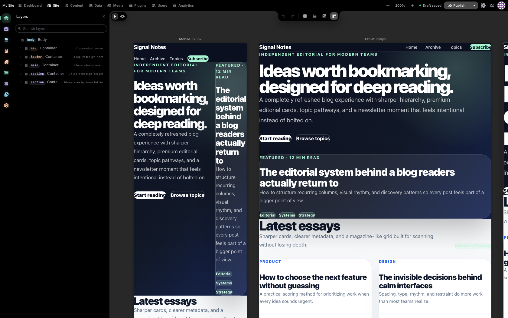
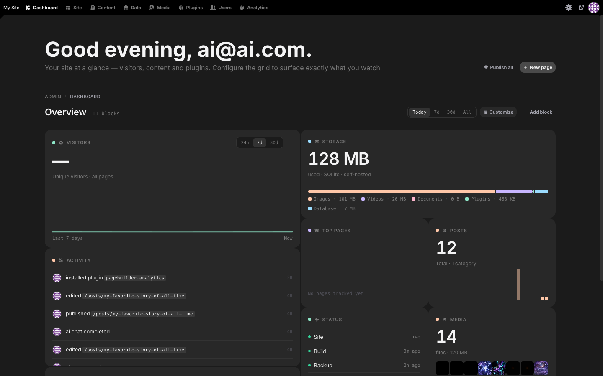
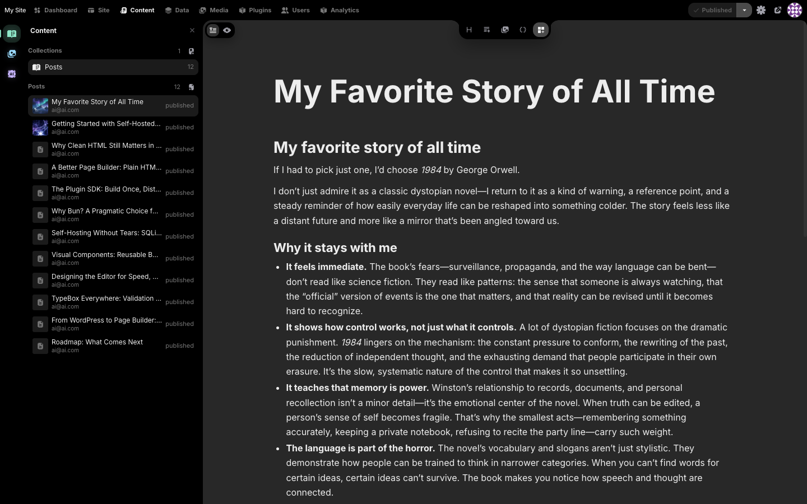

Press publish.
Get a static file.
Instatic is a self-hosted CMS that ships your pages as plain HTML. No runtime. No PHP-per-request. Just files served from disk.

How it works
Three layers. One canonical path: static.
Every page is baked to a real .html file at publish time.
Pages that genuinely need request-time data get an in-memory cache.
Truly dynamic nodes ship as <pb-hole> placeholders
that fetch on view.
-
A · Static
Baked to disk
Most pages become
uploads/published/<route>.html. Served by your reverse proxy. 0 ms of CMS in the request path. -
B · Cached
In-memory render
Dynamic routes go through an LRU keyed by
(urlPath, query, publishVersion). Cache wipes on every publish. -
C · Holes
Lazy fragments
Per-request nodes ship as
<pb-hole>markers. A 668-byteIntersectionObserverruntime fetches each fragment on view.
In the editor
Edit pages. Manage content. Same database.
Pages, posts, and components all live in one content model. Drag-and-drop canvas with breakpoint overrides. Posts use a focused content editor. Plugins extend both, sandboxed in QuickJS.


47ms
p95 page load. Static file served from disk.
0queries
Database touches per page request on static routes.
668B
Total client runtime. One IntersectionObserver for holes.
1process
One Bun server. SQLite or Postgres. No queue, no Redis.
Manifesto
Built to outlast
its dependencies.
No CMS should depend on PHP, Node, a specific Postgres version, or a vendor's cloud to keep running. Instatic ships your pages as static HTML. The CMS can break and your site keeps serving.
Read the full manifesto →Get the file-based CMS.
Self-hosted. Open source. One Bun process. SQLite by default.
bun create instatic@latest my-site
cd my-site && bun run dev